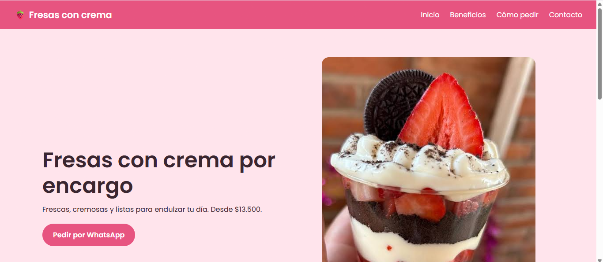
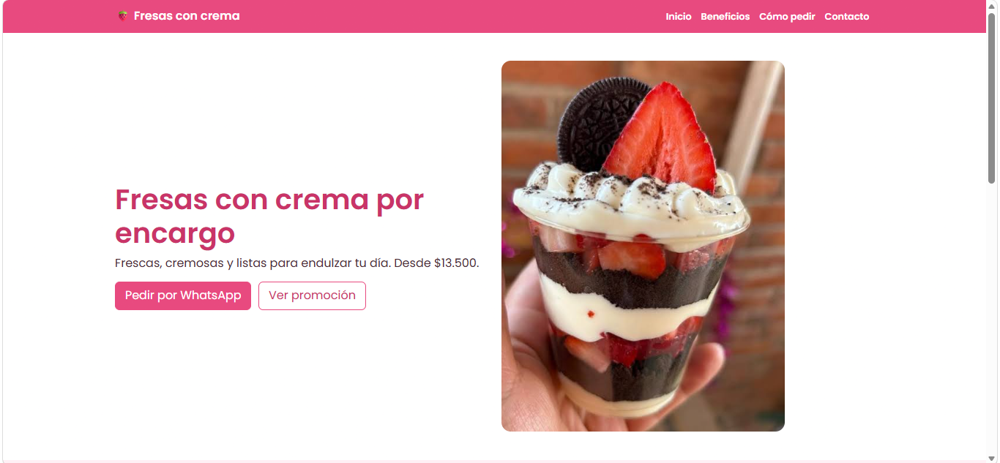

1. Lighthouse
Medido en una ventana de incógnito sobre los enlaces publicados.

Sesión 8 · CSS propio
Ver landing publicada
Sesión 13 · Bootstrap
Ver landing publicada2. Tabla comparativa
| Criterio | Sesión 8 · CSS propio | Sesión 13 · Bootstrap |
|---|---|---|
| Rendimiento (Lighthouse) | 90 / 100 | 85/ 100 |
| Accesibilidad (Lighthouse) | 85 / 100 | 85 / 100 |
| Líneas de CSS que escribí | 10 líneas | 48 líneas |
| Tiempo que me tomó | 3 horas | 4:30 horas |
| Qué tan única se ve | 30 | 85 |
| Qué tan fácil fue hacerla responsive | Más o menos | Mejoro |
3. Conclusión
Para el proyecto final voy a usar Bootstrap / mi propio kit (elige una).
Porque Bootstrap me ahorró tiempo en la barra de navegación, las columnas y el formulario con validación, y la página se adaptó al celular casi sin escribir CSS. En cambio, con mi propio CSS la página se ve más única y entiendo mejor cada línea.
Para el proyecto final vamos a usar Bootstrap / nuestro propio kit porque la hace ver mas organizada, con iconos lindos y en el css con colores suaves y femeninos, unicos de nuestro equipo. Bootstrap nos ayudó a hacer la página responsive más rápido y con menos código, pero nuestro propio CSS nos dio un diseño único, con los colores y el estilo de nuestra marca.